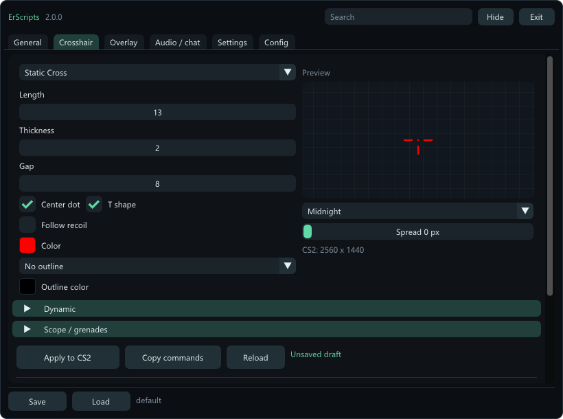
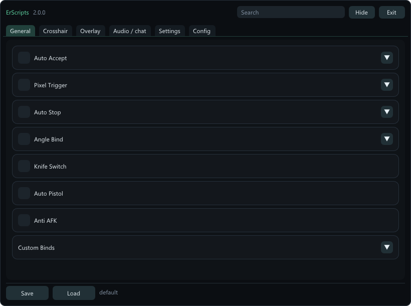

Bomb Timer
Round information and a clear countdown.
2.0.0 / Windows x64
Edit your crosshair. Keep round info visible. Back up your CS2 settings.
Free and open source. Runs alongside CS2.

Ten crosshair styles, colors and outlines. Preview before applying.
Bomb Timer, Keystrokes and Watermark, with their own settings.
Export your saved config or capture exposed settings from CS2.
THE MENU
Six tabs, built-in search and a settings arrow for each feature. Every screenshot is from 2.0.0.

Save the official release in a writable folder.
Steam > Counter-Strike 2 > Properties > General:
-conclearlog -condebug +bind scancode104 exec erscripts1On the first run, ErScripts creates its config and GSI files. Restart CS2 if it was already open.
Insert shows or hides it. End exits. Change the keys in Settings > App shortcuts.
GOOD TO KNOW
Through generated config files, Windows inputs, Game State Integration and console logs. ErScripts does not read or write game memory or inject code.
A generated CFG, JSON settings, original settings files and detected local scripts. Live capture adds exposed console values, binds and aliases. Video settings are kept as original files. Hidden engine state cannot be exported.
Open Config > Capture from CS2. The menu closes automatically. Return to CS2 and wait for completion, then choose Open export folder. Export does not apply any settings.
ErScripts tracks CS2's window and render resolution automatically. For fullscreen overlays, leave Disable fullscreen optimizations unchecked in cs2.exe compatibility settings. Driver scaling and CS2 updates may affect the result.
Automation can violate game, server or platform rules and lead to restrictions or bans. External operation does not guarantee safety or permission. Auto Stop, Pixel Trigger, Angle Bind and Auto Pistol require an explicit risk acknowledgement each time you enable them. Loading a profile leaves them off. ErScripts is not affiliated with Valve.
ERSCRIPTS 2.0.0
Free, open source and built for Windows.